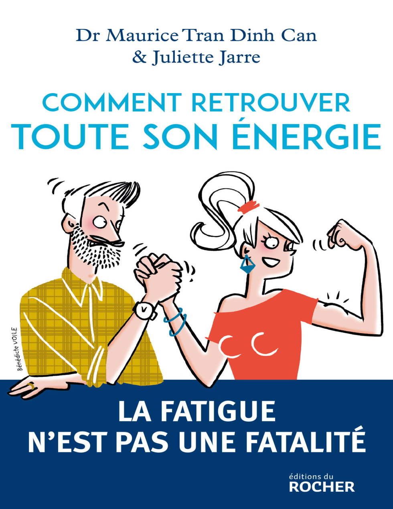

Comment retrouver toute son énergie
Dr Maurice Tran Dinh Can et Juliette Jarre
Lire le PDFTélécharger le PDFFiche d'identité
Présentation et résumé
Ouvrage consacré à la fatigue, à ses manifestations et aux moyens de retrouver de l’énergie, à partir de l’expérience clinique et de la pratique de l’acupuncture exposées par les auteurs.
Chapitre par chapitre
Les passages étiquetés « extrait documentaire » proviennent des pages du PDF et ne constituent pas des résumés rédigés. Les titres et repères sont issus de la fiche source.
1. Preambule — page 8
Les auteurs présentent la démarche du livre et introduisent les signes de fatigue à reconnaître dans la vie quotidienne.
Ouvrir à cette page2. Avant-propos — page 9
Résumé non disponible : consulter l’extrait documentaire ci-dessous.
Extrait documentaire : Avant-propos Pendant toutes mes études de médecine, et au fil des années de pratique, un émerveillement m’est toujours resté : celui que j’ai éprouvé en comprenant à quel point le corps humain est une machine extraordinaire. Imaginez seulement la multitude d’événements qui se déroulent simultanément dans notre organisme, la complexité des équilibres vitaux, l’harmonie incroyable qui naît de tout cela… Plus…
Ouvrir à cette page3. Cette fatigue qui nous plombe — page 15
Résumé non disponible : consulter l’extrait documentaire ci-dessous.
Extrait documentaire : Cette fatigue qui nous plombe Vous connaissiez peut-être déjà la plupart des signes. Les courbatures, le manque d’entrain, la mauvaise humeur… Tout ce que vous ressentez est plus ou moins désagréable, pénible, mais vous avez sûrement appris à faire avec… Maintenant, essayons de comprendre pourquoi nous ressentons ces symptômes. Muscles fatigués Prenons les courbatures, par exemple. Après un effort, les muscles sont…
Ouvrir à cette page4. Le cerveau — page 18
Présentation du cerveau, de ses fonctions et de ses besoins de récupération, notamment pendant le sommeil.
Ouvrir à cette page5. La fatigue du cerveau — page 23
L’auteur décrit la fatigue cérébrale et la difficulté de reconnaître les limites de son organisme.
Ouvrir à cette page6. Les effets de la fatigue : la somatisation — page 26
Résumé non disponible : consulter l’extrait documentaire ci-dessous.
Extrait documentaire : Les effets de la fatigue : la somatisation Quand il a besoin de repos, parce qu’il a été trop sollicité, trop longtemps, le cerveau exprime ce besoin par un signal de fatigue. Tous les êtres vivants répondent instinctivement à ce signal de fatigue par du repos… tous, sauf une espèce rebelle, qui résiste encore et toujours : l’homme. Le cerveau réitère alors sa demande de façon beaucoup plus aiguë. Dès lors, la vie…
Ouvrir à cette page7. Comment en suis-je arrivé à me passionner pour la fatigue ? — page 36
Résumé non disponible : consulter l’extrait documentaire ci-dessous.
Extrait documentaire : Comment en suis-je arrivé à me passionner pour la fatigue ? Qui suis-je ? À cause de ses opinions politiques, mon père, militaire vietnamien, a dû s’exiler en France avec toute sa famille. C’était en 1955. J’avais dix ans. Mes études secondaires se sont déroulées au lycée Jean-Baptiste-Say (à Paris, dans le XVIe arrondissement), dans des classes qui préparaient à l’école des Arts et Métiers. Puis, j’ai décidé de…
Ouvrir à cette page8. Connaître et comprendre sa fatigue… pour mieux lui dire au revoir ! — page 47
Résumé non disponible : consulter l’extrait documentaire ci-dessous.
Extrait documentaire : Connaître et comprendre sa fatigue… pour mieux lui dire au revoir ! La fatigue a une grande utilité, comme tous les autres signaux physiologiques tels que la faim ou la soif. Elle est là pour nous aider à vivre, à mieux vivre. En nous indiquant le moment où nous devons nous reposer, elle sert l’intérêt de notre cerveau, elle l’aide à maintenir sa performance, pour notre plus grand bien. Il n’est pas dans les…
Ouvrir à cette page9. Sortir de la fatigue pour retrouver une bonne santé — page 56
Présentation de pistes de repos, de sommeil et de récupération proposées par l’auteur.
Ouvrir à cette page10. Retrouver notre équilibre, préserver notre « écologie interne » — page 64
Résumé non disponible : consulter l’extrait documentaire ci-dessous.
Extrait documentaire : Retrouver notre équilibre, préserver notre « écologie interne » J’ai toujours été sensible à une pratique des médecins chinois que je trouve particulièrement sensée : dans l’ancien temps, ceux-ci ne se faisaient payer que lorsque leurs patients étaient en bonne santé. À la moindre trace de maladie, ils les traitaient gratuitement… C’est une manière de renverser le point de vue sur le soignant que j’aime beaucoup !…
Ouvrir à cette page11. Conclusion — page 69
Résumé non disponible : consulter l’extrait documentaire ci-dessous.
Extrait documentaire : Conclusion Vous voilà maintenant seuls face à votre fatigue. Seuls ? Pas tout à fait, quand même. Vous avez maintenant des outils en main pour la détecter, la comprendre, la combattre. Le premier pas, le plus important, est l’acceptation de cette fatigue, le fait de la reconnaître pour ce qu’elle est : un véritable problème à prendre en compte. Je vais vous dire une chose, à propos de laquelle tous mes patients sont…
Ouvrir à cette pageCritiques et sources externes
Lecteur PDF
Archive privée hors ligne. Ne pas publier les PDF sur un dépôt GitHub public sans droits de diffusion.